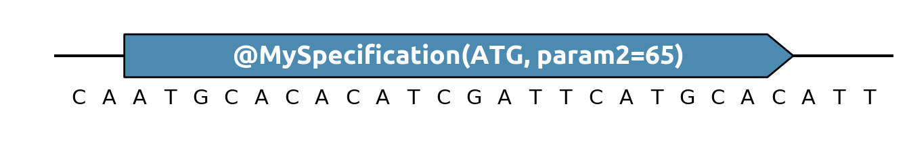

Genbank usage notes¶
Annotation type¶
For a genbank feature to be recognized by DNA Chisel, they must be of type
misc_feature (ask your favorite Genbank editor if you are unsure how to set
this type).
The annotation should have the same parameters as the specification it represents (so the same parameters as you would write in a Python script, except that strings do not require quotes):
Weighted objectives¶
Like with python scripts, when in presence of multiple competing optimization
objectives, you can give them a weight multiplicator via the boost
parameter,
e.g. ~MySpec(..., boost=2).

Multiple specifications in the same annotation¶
If you want to write fewer annotations, you can define several specifications in
a single feature, separating them with the & symbol. For instance, to
conserve a gene while getting rid of CpG islands and keeping the global GC%
between 45% and 55%:

Adding new annotations to the Genbank parser¶
New specifications can be supported by the DNA Chisel parser by extending the default specifications dict:
from dnachisel import DEFAULT_SPECIFICATIONS_DICT
...
class MySpecification(Specification):
def __init__(self, param1, param2=55):
...
DEFAULT_SPECIFICATIONS_DICT['MySpecification'] = MySpecification
problem = DnaOptimizationProblem.from_record('my_record.gb')
Any specification in this dictionary can be used in Genbank annotations with the same parameters as in a Python script (note that strings do not require quotes):